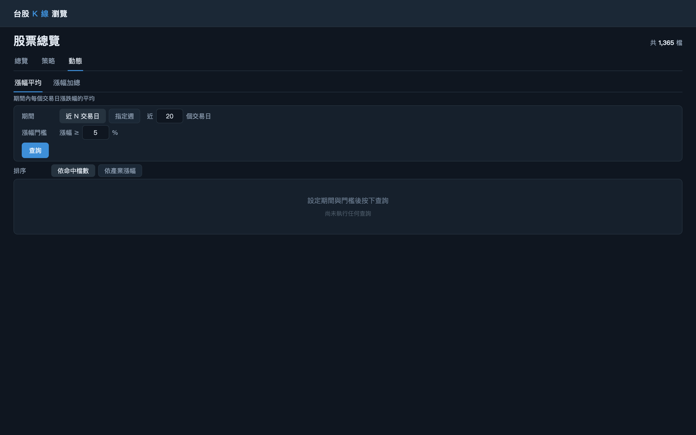
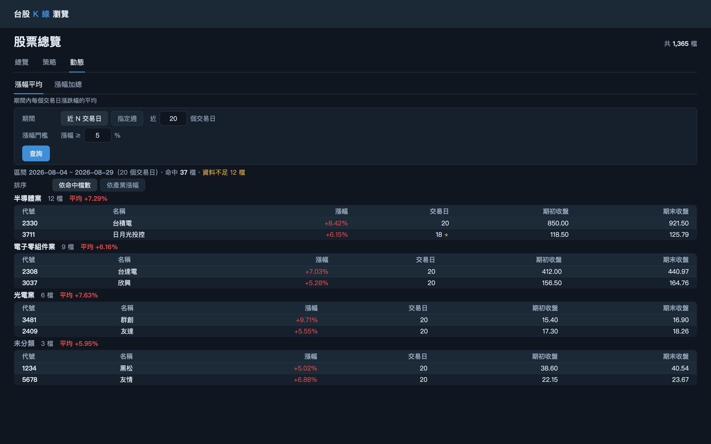
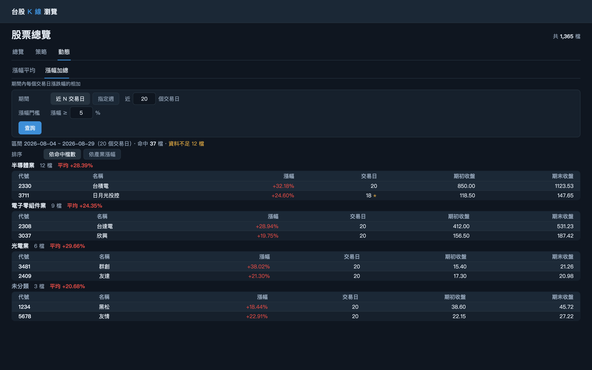
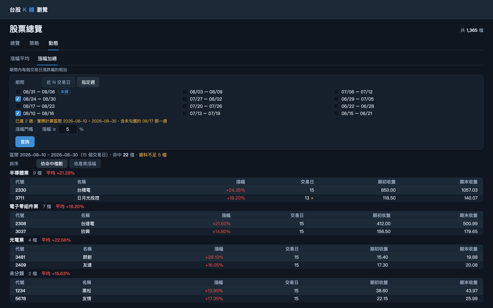
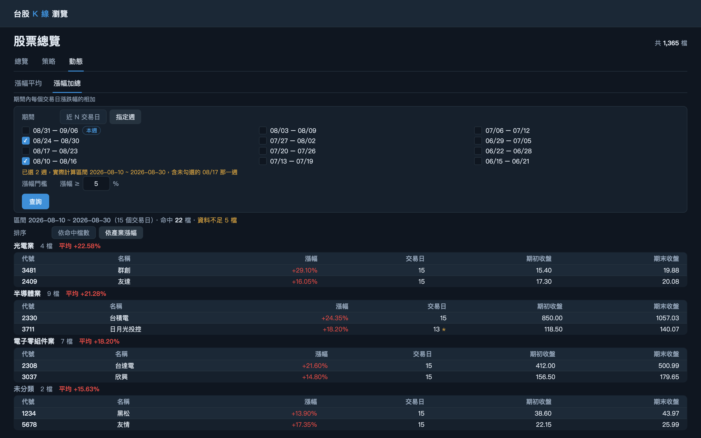

/api/momentum/gain?metric=AVERAGE&mode=DAYS&days=20&minGain=5&sort=MATCH_COUNT依「近 20 個交易日」查詢漲幅平均達 5% 以上的股票，按產業別分組並回傳各區塊平均漲幅
/api/momentum/gain?metric=SUM&mode=DAYS&days=20&minGain=5&sort=MATCH_COUNT切換為「漲幅加總」重新查詢，期間沿用近 20 個交易日、門檻回到本標籤預設值 5
/api/momentum/gain?metric=SUM&mode=WEEKS&startDate=2026-08-10&endDate=2026-08-30&minGain=5&sort=MATCH_COUNT依勾選週折算出的區間查詢漲幅加總達 5% 以上的股票，按產業別分組並回傳各區塊平均漲幅
/api/momentum/gain?metric=SUM&mode=WEEKS&startDate=2026-08-10&endDate=2026-08-30&minGain=5&sort=AVG_GAIN以「依產業漲幅」重新查詢；排序由後端決定，前端不重排既有結果